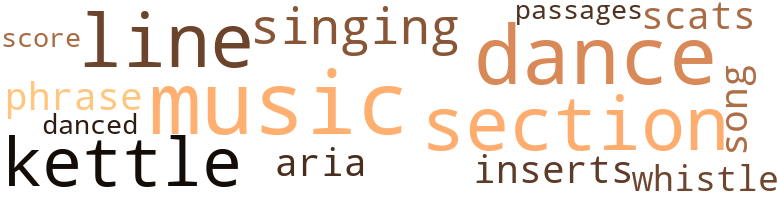
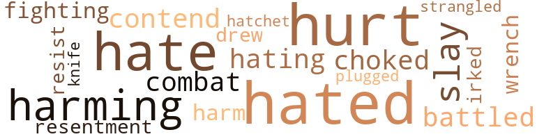

Search for Accord, by Burke, Lily (1959)
38 music-related terms matched in this text.
Most frequent terms in this topic: music (7); dance (6); section (5); line (5); kettle (4)
aria.n.01
Definition: an elaborate song for solo voice
| word | sentence |
|---|---|
| aria | During the final aria , when she shifted her elbow a little , he found and held her hand ; and , while leaving the theatre , he took her arm to guide her . |
dance.n.01
Definition: an artistic form of nonverbal communication
| word | sentence |
|---|---|
| dance | " Last Saturday night when he took me to a dance . " |
| dance | She was sure to be much younger and appeal to his youthful characteristics ; their friendship had started with a dance engagement . |
| dance | She told me you took her to a dance on Saturday night . |
| dance | Many hours later when they were outside , and the neighbor across the street came over to talk to them , he said to Louise , " She 's head of the club that had the dance on Saturday night . |
| dance | However , his honest explanation of the dance engagement , and the very fact that he had asked Irene to call her direct proved his sincerity . |
| dance | This was not the lady of the dance engagement many months ago . |
dance.v.03
Definition: skip, leap, or move up and down or sideways
| word | sentence |
|---|---|
| danced | " Yes , they danced till the liquor gave out . " |
insert.n.01
Definition: a folded section placed between the leaves of another publication
| word | sentence |
|---|---|
| inserts | His handwritten notes were terribly confused ; cut-backs , inserts , different series of page numbers . |
kettle.n.04
Definition: a large hemispherical brass or copper percussion instrument with a drumhead that can be tuned by adjusting the tension on it
| word | sentence |
|---|---|
| kettle | Shall I put on a kettle for some coffee ? |
| kettle | She slipped out of bed without waking him , dressed , put a kettle of water on the stove , and went to the basement to fill the bucket from the spring . |
| kettle | There 's hot water in the kettle . " |
| kettle | " The kettle 's already boiling . " |
music.n.01
Definition: an artistic form of auditory communication incorporating instrumental or vocal tones in a structured and continuous manner
| word | sentence |
|---|---|
| music | After reading and music , he turned to her . |
| music | During the music he gradually moved nearer to her so that their shoulders met , and they eventually found room for both elbows on the one arm of the seat . |
| music | During the music he often held her hand , and they did not take the trouble to applaud along with everyone else . |
| music | He kissed her , while he was starting a music program . |
| music | She read while he prepared lunch ; afterwards she sat with his arm around her listening to the music on the radio . |
| music | After they had eaten , they listened to music on the radio , but soon went upstairs back to work . |
| music | There was beautiful music , and they sat in loving fashion , listening and talking . |
passage.n.06
Definition: a short section of a musical composition
| word | sentence |
|---|---|
| passages | As I read it , will you help me with the passages that are n't entirely clear . |
phrase.n.02
Definition: a short musical passage
| word | sentence |
|---|---|
| phrase | She read the manuscript out loud , and would sometimes ask for clarification of meaning , but she never changed even a punctuation mark , much less a word or phrase , without first getting his approval . |
scat.n.01
Definition: singing jazz; the singer substitutes nonsense syllables for the words of the song and tries to sound like a musical instrument
| word | sentence |
|---|---|
| scats | Will you order scats when the program changes ? " |
score.n.02
Definition: a written form of a musical composition; parts for different instruments appear on separate staves on large pages
| word | sentence |
|---|---|
| score | The two became wholly engrossed in the game which involved a score including six arrows . |
section.n.01
Definition: a self-contained part of a larger composition (written or musical)
| word | sentence |
|---|---|
| section | I have finished typing the section of your manuscript which I brought in ; it was difficult as I had n't taken enough notes on the correct paging . |
| section | Will you buy some ? " and he opened the bill section of his wallet . |
| section | He was wandering through the cleared section , and then he skirted the heavily wooded hillside . |
| section | But my apartment keys were in one section . |
| section | When she opened the section for the keys , she found them there . |
singing.n.01
Definition: the act of singing vocal music
| word | sentence |
|---|---|
| singing | She hung up the receiver , actually singing for joy - an old familiar song - " I have a wonderful feeling everything 's going my way . " |
| singing | She was awakened by the first birds singing at dawn , but many moments passed before she was fully cognizant that he was lying next to her . |
song.n.01
Definition: a short musical composition with words
| word | sentence |
|---|---|
| song | She hung up the receiver , actually singing for joy - an old familiar song - " I have a wonderful feeling everything 's going my way . " |
tune.n.01
Definition: a succession of notes forming a distinctive sequence
| word | sentence |
|---|---|
| line | I tried getting you twice this evening and found your line busy . |
| line | He gave no further explanation , assuming that his statement of finding her line busy was sufficient excuse for breaking their appointment . |
| line | Operator has called me many times to say their line is busy . " |
| line | This information accounted for his busy line , and she could dismiss the thoughts that he was avoiding her . |
| line | Its shore line is n't as beautiful , but it 's more convenient for swimming . " |
whistle.v.01
Definition: make whistling sounds
| word | sentence |
|---|---|
| whistle | She had taken her reading to bed , and heard him trying to whistle outside . |
38 violence-related terms matched in this text.
Most frequent terms in this topic: hurt (6); hated (6); hate (5); harming (3); slay (2)
battle.v.01
Definition: battle or contend against in or as if in a battle
| word | sentence |
|---|---|
| battled | She frequently battled with a puzzling contradiction ; would she better gain his affection by showing greater dependence upon him , or was it best to allow him to follow freely his own impulses ? |
| combat | One does have to combat the philosophy of acquiring pleasure from being miserable ; that phase had never existed in this present situation , though she had often been guilty of such foolishness in the past . |
contend.v.06
Definition: be engaged in a fight; carry on a fight
| word | sentence |
|---|---|
| contend | She was quite willing to forget the usual conventionalities in order to have this man for her friend , but she did not relish the idea of having to contend at the same time with another girl friend . |
draw.v.23
Definition: pull (a person) apart with four horses tied to his extremities, so as to execute him
| word | sentence |
|---|---|
| drew | Yes , it drew up onto the thick vegetation in front of her , barely leaving room for a passing car . |
fight.v.02
Definition: fight against or resist strongly
| word | sentence |
|---|---|
| fighting | The present situation of an election in Harlem showed how the people there were really fighting for their rights . |
gag.v.06
Definition: cause to retch or choke
| word | sentence |
|---|---|
| choked | The thought of food choked her . |
gall.v.02
Definition: irritate or vex
| word | sentence |
|---|---|
| irked | Paul was not a tall man ; he was no taller than Louise ; she often thought this condition irked him during their married life . |
harm.v.01
Definition: cause or do harm to
| word | sentence |
|---|---|
| harming | '' But think how you will be harming your children and grandchildren . " |
| harming | " Sincerely , I do n't think I 'd be harming anybody . |
| harming | " I do n't look upon this as your harming me . |
hate.v.01
Definition: dislike intensely; feel antipathy or aversion towards
| word | sentence |
|---|---|
| hated | But she had been expecting him any moment for the past two hours ; by now , she hated to take the next hourly bus . |
| hating | She waited with him on the subway platform , hating to say good-bye . |
| hate | She could n't make herself say , " I hate being older than you , " but he knew what she meant . |
| hated | Although she hated terribly to bring up such a subject she did feel the dire necessity of letting him know they could live in a neighborhood close to where she now lived . |
| hated | " And he told me how much he hated going to that restaurant-bar , because he had to stay around and talk to all his friends . " |
| hated | As usual she hated to say good-bye , and stayed with him until he took an uptown train . |
| hated | She hated to telephone the operator and tell her temporarily to discontinue her service . |
| hate | I hate to rush . " |
| hate | Also I have n't cleaned up my apartment and I hate for you to see it this way . " |
| hate | I hate to interrupt , but we ought to be going . " |
| hated | She hated to think of this terrible possibility . |
| hate | I hate to say so , but one of those children must have taken it . " |
hurt.v.04
Definition: cause damage or affect negatively
| word | sentence |
|---|---|
| hurt | Mr. Benson did hurt himself quite badly . |
| hurt | Her feelings had been unduly hurt ; he had actually wanted her to come , although he had asked her not to . |
injury.n.01
Definition: any physical damage to the body caused by violence or accident or fracture etc.
| word | sentence |
|---|---|
| harm | Of course she had not promised him , but felt there was no harm in declaring something that she would have most willingly done . |
knife.n.02
Definition: a weapon with a handle and blade with a sharp point
| word | sentence |
|---|---|
| knife | He handed her a knife and asked her to slice it while he heated the electric frying pan . |
murder.v.01
Definition: kill intentionally and with premeditation
| word | sentence |
|---|---|
| slay | While she and Fanny were wrapping each plant separately in newspapers , and placing them in an old half-bushel basket , Louise asked , " Why do n't you slay over till tomorrow ? |
| slay | But if you would not slay here you must feel strange about it . " |
pain.v.02
Definition: cause emotional anguish or make miserable
| word | sentence |
|---|---|
| hurt | Perhaps she hurt his feelings ; he may have concluded that she did n't wish to sit through a long meal in a restaurant with him . |
| hurt | " Does it hurt you when you 're perfectly still ? " |
| hurt | You do n't understand that I was hurt when you did n't come back . " |
| hurt | Then I hurt my back . |
punch.v.01
Definition: deliver a quick blow to
| word | sentence |
|---|---|
| plugged | Meanwhile she plugged away at her own writing during her free hours . |
resentment.n.01
Definition: a feeling of deep and bitter anger and ill-will
| word | sentence |
|---|---|
| resentment | She knew that if Philip appeared on the scene everyone would be outwardly polite to him , but there might be fearful repercussions of resentment from Paul and his wife . |
resist.v.04
Definition: withstand the force of something
| word | sentence |
|---|---|
| resist | She could not resist going early to class . |
strangle.v.01
Definition: kill by squeezing the throat of so as to cut off the air
| word | sentence |
|---|---|
| strangled | And your house , '' he muttered as he strangled her with kisses . |
tomahawk.n.01
Definition: weapon consisting of a fighting ax; used by North American Indians
| word | sentence |
|---|---|
| hatchet | When Philip asked for an axe or a hatchet , she refused him , saying she did n't have an extra one . |
wrench.n.01
Definition: a sharp strain on muscles or ligaments
| word | sentence |
|---|---|
| wrench | Leaving the house where she had spent all the happy years of her marriage had been an emotional wrench ; and even to this day , in the early spring and late fall , she always stayed alone at the big house on weekends , away from the city . |
10 religion-related terms matched in this text.
Most frequent terms in this topic: faith (6); sacrificing (2); church (1); sacrifice (1)
church.n.02
Definition: a place for public (especially Christian) worship
| word | sentence |
|---|---|
| church | Time passed ; she realized he had been obligated to go to the cemetery , instead of leaving after the church ceremonies . |
religion.n.01
Definition: a strong belief in a supernatural power or powers that control human destiny
| word | sentence |
|---|---|
| faith | She had very little faith in her attraction for him ; she always fell he might decide she was too old fur him . |
| faith | Truly , her establishing its existence in the minds of other people tended to strengthen her faith in its stability . |
| faith | Through all her misgivings she still had faith in his love for her , and would do her best to keep it . |
| faith | Mary would , quite logically , have faith that she would keep Philip , regardless of Louise . |
| faith | She must implant a greater faith in himself . |
| faith | She had strong faith that she could have him and also retain them . |
sacrifice.v.04
Definition: make a sacrifice of; in religious rituals
| word | sentence |
|---|---|
| sacrifice | I 'd rather sacrifice a few hundred dollars now than have the trouble and uncertainty of collections on a mortgage . " |
| sacrificing | Here he was back again , unshaken from his original ideas about sacrificing so much to marry him . |
| sacrificing | You will be sacrificing so much if you married me . " |